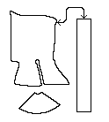

Pattern drawing based on N�rlundReturn to Contents; Herjolfsnes Site Page or Proceed
Some Clothing of the Middle Ages -- Hoods -- Herjolfsnes 71, by I. Marc Carlson, Copyright 1996 This code is given for the free exchange of information, provided the Author's Name is included in all future revisions, and no money change hands-